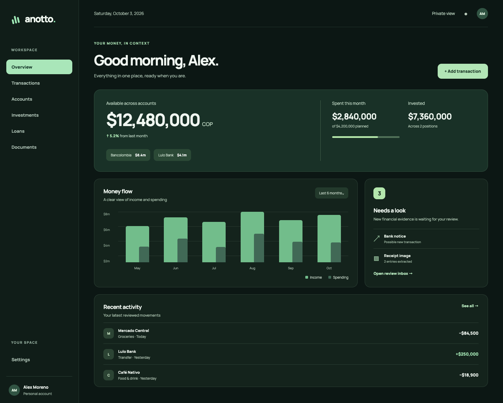
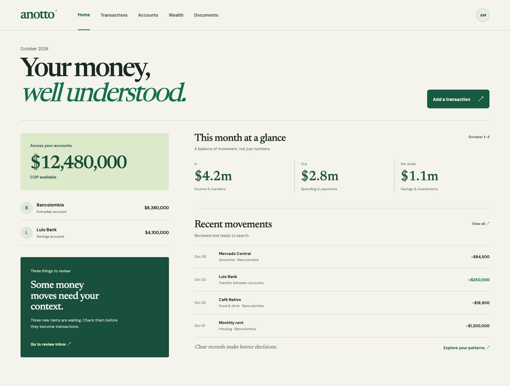
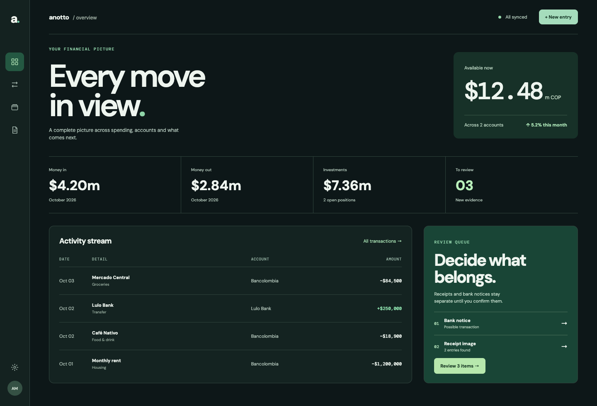

Three independent visual directions for the customer-facing finance app. All figures and activity are illustrative, not account data. Open a direction to inspect the responsive browser prototype.



Review prototypes only. No production UI, data, authentication, or routes are changed.